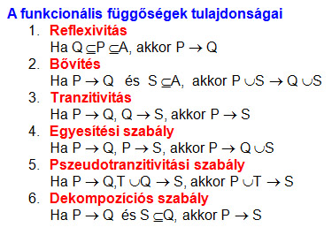

2.4.1. Funkcionális függőség
Legyen R{A1, A2 ..., An } egy reláció és P, Q az A attribútumhalmaz részhalmazai.
Azt mondjuk, hogy P funkcionálisan meghatározza Q-t (vagy Q funkcionálisan függ P-től), ha abból, hogy a reláció valamely két sora megegyezik a P halmazon, következik, hogy a két sor értékei megegyeznek a Q halmazon is.
Jele: P→Q
Rendelésnyilvántartó példánkban az egyetlen tábla 11 tulajdonságból állt:
RENDELÉS {rendszám, vkód, vevőnév, vevőcím, kelt, határidő,
cikkszám, cikknév, egysár, rendmenny, összérték}
Legyen P = {rendszám}, Q = {vkód, kelt, határidő, összérték}
Ekkor P →Q teljesül, ugyanis ha ismert a
rendszám (a rendelési bizonylat száma), akkor egyértelmű a vevő kódja, a
bizonylat kelte, határideje és összértéke.
További funkcionális függőségek:
{vkód} →{vevőnév, vevőcím}
{cikkszám} →{cikknév, egysár}
{rendszám,
cikkszám} →{rendmenny}
Tehát a vkód egyértelműen meghatározza a vevő törzsadatait, a cikkszám a cikk törzsadatait, de ahhoz, hogy egyértelmű legyen a rendelt mennyiség értéke, bizony ismerni kell, melyik bizonylat melyik tételéről van szó, tehát a rendszámot és a cikkszámot is.
Megjegyzés
A kulcs definíciójából következik, hogy a K kulcs funkcionálisan meghatározza:
- a „kulcson kívüli" attribútumhalmazt
példánkban:
{rendszám, cikkszám} → {vkód, vevőnév, vevőcím, kelt, határidő, cikknév, egysár, rendmenny, összérték}
- az egész attribútumhalmazt
K → A
Rendelés-nyilvántartó adatbázisunkban ezen fejezet elején felsoroltunk 4 tapasztalható funkcionális függőséget:
- {rendszám} → {vkód, kelt, határidő, összérték}
- {vkód} →{vevőnév, vevőcím}
- {cikkszám} → {cikknév, egysár}
- {rendszám, cikkszám} → {rendmenny}
Függőségi család
Egy adatbázisban lehet több olyan (P,Q) pár is, melyre P→Q.
Ezek halmazát az adatbázis funkcionális függőségi családjának hívjuk, és F-fel jelöljük
1. kérdés:
Ismert funkcionális
függőségekből kikövetkeztethetők-e újabbak?
A válasz:
Igen. Az ún.
Armstrong-axiómák (szabályok) alapján.

Alkalmazás:
Mivel {rendszám} → {vkód, kelt, határidő, összérték}
és {vkód} → {vevőnév, vevőcím},
ezért a 6.
és 3. szabály értelmében : {rendszám} → {vevőnév, vevőcím}
2. kérdés:
Egy X → Y függőség kikövetkeztethető-e egy F családból
az Armstrong-axiómák alkalmazásával ?
A válasz:
igen. A lezárt fogalmának
segítségével.
Az X+ (X lezártja F-re nézve) azon Q attribútumok halmaza, amelyre az X→Q függőség az Armstrong-axiómák segítségével F-ből kikövetkeztethető.
A 2. kérdésre a válasz:
Az X→Y függőség akkor és csak akkor
következik egy F függőségi családból az Armstrong-axiómák alapján, ha az Y
részhalmaza az X lezártjának, azaz Y X+.
X+.
Ez valóban némi kerülőt jelent, hiszen az összes tulajdonságot kell összegyűjteni, amiket a bal oldal meg tud határozni, majd el kell dönteni, hogy a kérdéses jobb oldal közte van-e az előállított összesnek. De ez a módszer algoritmizálható, tehát egy számítógépes módszer lehet.
Példa
RENDELÉS {rendszám,
vkód, vevőnév, vevőcím, kelt, határidő, cikkszám, cikknév, egysár,
rendmenny, összérték}
adott az F függőségi család:
{rendszám} → {vkód, kelt, határidő, összérték}
{vkód} → {vevőnév, vevőcím}
{cikkszám} → {cikknév, egysár}
{rendszám,
cikkszám} → {rendmenny}
Következik-e F-ből: {rendszám} → {vevőcím}
1. lépés: {rendszám} lezártjának meghatározása
2. lépés: {vevőcím} részhalmaza-e a lezártnak
1. lépés:
Az X-ből indulunk ki és megnézzük, hogy az X részhalmazai melyik függőség bal oldalán fordulnak elő.
X(0) = {rendszám}
Ahol ilyet találunk, annak a jobb oldalát hozzávesszük a halmazunkhoz, és folytatjuk a részhalmazok keresését a függőségek bal oldalán.
X(1) =
{rendszám} {vkód, kelt, határidő, összérték}
{vkód, kelt, határidő, összérték}
X(2) =
{rendszám, vkód, kelt, határidő, összérték} {vevőnév, vevőcím}
X(3) = X(2)
Az algoritmusnak akkor van vége, ha már nem bővül a halmazunk (maximum addig tart, amíg az összes, véges sok tulajdonság belekerül), azaz minden olyan tulajdonság belekerült, akiket az X egyértelműen meghatároz a F családból a szabályok segítségével.
Tehát :
{rendszám}+ = {rendszám, vkód, kelt, határidő, összérték, vevőnév, vevőcím}
2. lépés:
{vevőcím} {rendszám}+ igaz.
A kérdéses függőség tehát származtatható volt a megadott függőségekből.
Relációk szétbontása
Módszereket dolgoztak ki arra, hogy a relációk szétbontása veszteségmentes legyen (a funkcionális függőségek megmaradjanak).
Cél: A redundancia megszüntetése.
Speciális funkcionális függőségek
Definiálnunk kell legalább az alábbi 3 speciális függőséget, de előtte felhívjuk a figyelmet arra, hogy létezésük kívánatos-e vagy sem.
- teljes: jó
- részleges: rossz
- tranzitív: rossz
Ezek segítségével tanulhatjuk meg a relációk szétbontásának veszteségmentes módszerét. Valójában a módszer a redundancia mértéket nagyban csökkenti (általában megszünteti), és óriási előnye, hogy algoritmizálható. Ebben a képzésben csak annyira mélyedünk el a módszerben, hogy a mások által megtervezett adatbázist felismerjük és megértsük az adatok több táblában való elhelyezését.